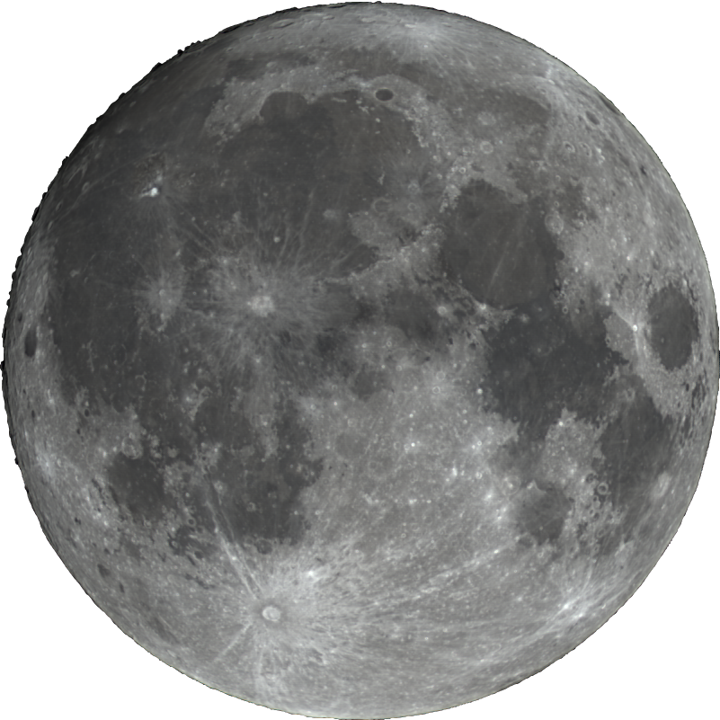

Your picture is ready
The level and the object types choose the pins for you. Every ticked target is a pin on the picture: tap a pin or its label to edit it, drag to move it. Unticking a target removes its pin. One picture holds up to 120.
InstaSlice Studio identifies the area of sky in a photograph by plate solving. It determines where the camera was pointed, how much sky each pixel covers and how the frame is oriented, and then projects catalogue objects onto the picture. The entire process runs locally in your browser, in a background worker. The photograph is never uploaded.
The image is reduced to a luminance channel: a weighted mixture of red, green and blue with extra weight on the strongest channel, so that narrowband stars remain detectable on coloured backgrounds. A local background is estimated around every pixel from an integral image (summed-area table), which keeps the cost independent of the window size.
A pixel is a candidate when it is a local maximum among its eight neighbours and stands out from the local background in both peak and core intensity. A candidate is rejected when the background is brighter on one side of the window than on the other (horizon, building and cloud edges), when the profile is elongated (star trails, diffraction spikes), when it is too narrow (hot pixels, noise) or when its centroid does not coincide with the peak.
Accepted peaks are measured with an intensity-weighted centroid above a local floor, which places each star to a fraction of a pixel. Maxima that fall within a few pixels of a brighter one are merged, and at most 520 stars are retained, ranked by flux and roundness. When the visible-text check finds a caption along the lower edge, that band is excluded.
A star that has saturated is a flat plateau, not a peak, so the local-maximum test above misses it, although it is often the brightest star of the frame and the first one a catalogue lists. If the search with the list above finds no field, the large saturated plateaus (compact, round, on a darker surround, as opposed to bright nebula knots) are measured as stars, added to the list, and the shallow search is repeated with them. A frame that the ordinary list solves never uses this step, so its result is unchanged.
Pixel positions are converted into directions, as seen by a pinhole camera. Because the code is computed from angles on the celestial sphere, it varies very little with the assumed focal length, which is initially unknown.
Each fingerprint is built from four stars. The two most widely separated stars, A and B, define a local frame: a tangent-plane projection centred midway between them and scaled so that the A–B distance equals one. The other two stars, C and D, are expressed as coordinates in this frame. The result is four numbers that are invariant to rotation and to scale.
Canonical rules fix the labelling (which of A and B comes first, which of C and D comes first, the sign of the vertical axis), so that the same four stars always yield the same code, in the photograph and in the catalogue alike. Ambiguous or degenerate groups, such as nearly equal longest sides or near-collinear stars, are discarded. The four numbers are quantised in steps of 1/32 and packed into one 24-bit key.
The method belongs to the family of published four-star geometric-hashing solvers (Lang, Hogg, Mierle, Blanton and Roweis, 2010). This implementation, its index format and its verification stages are specific to InstaSlice and contain no third-party code.
Catalogue stars are stored as direction vectors in a k-d tree, which answers nearest-neighbour queries quickly. The bright, mid-depth and narrow-field packs do not store star patterns. For every sampling circle they hold a short list of its brightest stars (12 in the bright pack, 8 in the mid-depth pack, 7 in the narrow-field pack). When a pack is opened, the solver generates every four-star code of every circle with the same function that reads the photograph, sorts the keys with two radix passes, removes duplicates and builds a lookup table keyed on the first three code coordinates.
This takes about one second, happens once per session in the background and keeps the downloads small: the packs are roughly one fiftieth (bright) and one fifth (mid-depth) of the size of the equivalent stored tables. Adding fainter stars therefore costs only the stars themselves.
The search uses iterative deepening. It starts with the 10 brightest detections (210 four-star combinations), continues with 14 (1,001) and 19 (3,876), and only then runs longer passes with up to about 30 stars. Each deeper pass skips the combinations already examined. A frame with a clear match among its brightest stars is therefore solved within milliseconds, whichever index holds the answer; only a difficult frame pays for the full search.
Every combination is looked up within a small tolerance. Each hit is a hypothesis: these four detections are those four catalogue stars. The all-sky indexes are searched in overlapping scale bands (bright pack: nominal fields of 22°, 50° and 80°; mid-depth pack: 3.5° and 8°; narrow-field pack: 1° and 2.2°), so a hit that implies an implausible scale is discarded at once.
The detections are ordered in three ways and each ordering is tried: by brightness and roundness, by spatial balance over a 5 × 5 grid (so that a crowded region cannot monopolise the list) and by contrast. Tall frames are searched whole and then in their upper part alone, because the sky often occupies only the top of a portrait photograph. A time limit of 12 seconds applies, and the progress bar reports the combinations actually examined.
The search runs in a Web Worker, so the interface stays responsive. The indexes are opened in the background as soon as the Annotate section appears.
A matched group of four stars defines the pose directly. The A–B distance fixes the scale (the focal length in pixel units), the aligned local frames fix the rotation, and the side on which C and D fall fixes the parity, that is, whether the image is mirrored. The result is a pinhole camera: an optical axis on the sky, two image axes and a focal length. For the all-sky indexes the focal length is solved within the limits of the scale band; for deep-sky fields it follows directly from the chord.
Most hypotheses are false. A candidate is accepted only if it passes every one of the following stages.
These figures are per-candidate bounds derived from the shifted-sky control. They are not a measured false-positive rate of the application.
The accepted model is written as a standard WCS: a tangent-plane (TAN) projection, with SIP distortion terms when a distortion correction was retained. It provides the centre (right ascension and declination), the field of view, the pixel scale in arcseconds per pixel, the rotation and the root-mean-square residual of the matches.
Objects from the OpenNGC, Stellarium deep-sky and HYG catalogues are projected through this model and selected as pins according to the annotation level and object types you choose. A WCS imported from another source can be used instead of the solution found here.
No mode has to be selected. When the ordinary solve finds no verified match, the app continues automatically with a wide-frame pass, because a single tangent-plane model cannot describe such pictures.
The star-bearing region is located first; where a ground line exists it is detected as the row at which the sky glow falls most, and lights on the ground are excluded from the star list. Five fields are then cut from the region, the centre and the four corners. Each field is solved with the engine described above, using the bright all-sky indexes. Every star matched in a solved field yields a pair: its position in the frame and its direction on the sky.
In a levelled panorama (equirectangular or cylindrical) a degree of longitude spans only the cosine of the altitude of a degree on the sky, so a field high above the horizon is stretched sideways and its fingerprints do not match. The horizon is therefore treated as the equator of a cylinder. A field just above it, which is almost undistorted, is solved first and gives the scale; the other fields are redrawn as the tangent plane at their own centre before they are solved. Neither the horizon row nor the scale has to be exact.
The pairs are fitted with a lens model: equirectangular, central cylindrical, Mercator, cylindrical equal-area, cylindrical stereographic, rectilinear, stereographic, equidistant, equisolid, orthographic, or a one-parameter family between them. The fit starts from closed-form seeds over up to about 1,400 candidate optical axes and is refined by Levenberg–Marquardt minimisation with a Tukey biweight loss, so that wrong pairs, for example stars matched on foreground glow, are ignored rather than merely discounted. The projection is chosen by how many of all the stars detected in the frame land on catalogue stars, compared with the same count at shifted positions.
The fit yields the pointing, the angular extent, the sampling (arcseconds per pixel at the centre, minimum and maximum) and the roll of the frame. If the fields do not agree on one projection, as in a locally warped or stitched panorama, the frame is rejected and no annotations are drawn, because their positions could not be trusted.
The Moon follows a separate pipeline, since there are no stars to match. Local features of the photograph are described with RootSIFT descriptors and compared, with a nearest-neighbour ratio test, against an atlas of reference views of the Moon generated from NASA Scientific Visualization Studio lunar imagery at different phases and librations. Candidate alignments are estimated robustly (RANSAC-type fitting of local affine transforms) and verified against the reference view; at least 28 consistent feature matches, spread over the disc, are required.
The accepted view gives the position, size, rotation and libration of the disc. Names and positions of surface features come from the IAU Gazetteer of Planetary Nomenclature. Feature extraction and matching run in WebAssembly on your device.
Beta. The InstaSlice solver is still a beta model and has its own limits. Solving happens entirely on your device, with no server and no public solver, so it can only use the star data that is stored in the app, and some regions of the sky are not covered well enough yet. A frame that does not solve is not a sign that the photograph is bad. These are the exact limits.
The solver is built on geometry and statistics, not on a trained neural network. (The visible-text check that protects your privacy does use a small on-device text-recognition model.) A verified solution is statistically very unlikely to be wrong, but it is not guaranteed, so annotations should be checked against the image.
Likely causes of failure, besides the limits above: strong lens distortion, trailed stars, heavy cloud or light pollution, panoramas that were warped or stitched locally, and fisheye frames with very compressed corners.
Reference data: Gaia DR3 (ESA/Gaia/DPAC) and Hipparcos 2 for stars; OpenNGC, the Stellarium deep-sky catalogue and HYG for object labels.
Claudiu Girleanu gratefully acknowledges the astrophotographers who provided images used to test and tune the solver:
The photographs were used only on Claudiu Girleanu's computer. They are not distributed with the app, which contains none of their pixels, metadata or star positions. The links open Instagram, a third-party service, in a new tab; the app contacts it only if you select one.
InstaSlice Studio was conceived, directed and tested by Claudiu Girleanu, and it is vibe coded: the software was written iteratively by AI models working from his natural-language specifications and feedback. Three models were used: Gemini (Google), Claude (Anthropic) and Codex (OpenAI).
The solver is based on geometry and statistics rather than a trained neural network, so no model training in the machine-learning sense took place. The photographs served for calibration and verification: the star-detection thresholds, the order in which stars are tried, the search passes and the acceptance criteria were tuned against them. Failures on these pictures in earlier builds led directly to the five-field ultra-wide pass, the iterative search and the compact procedural star index.
Because the tuning set is limited, performance is best established for pictures similar to it. Other cameras, lenses and sky conditions may behave differently.
Inside works with Ring, Reticle and Circle markers that are large enough for the text; otherwise the label stays outside.
Auto keeps each label next to its target. When the field gets crowded it moves the labels into tidy columns, and as a last resort into a numbered key, so nothing overlaps.
Tap an annotation, or its label, to edit it. Drag a label to place it where you want.

Solving happens on this device. Visible text stays in exports unless you crop or edit it.
Your photos and edits stay on your device. This notice is given under Article 13 of Regulation (EU) 2016/679 (GDPR). It explains which personal data is processed when you use InstaSlice Studio, why, and what rights you have.
The controller (Art. 4(7) GDPR) is Claudiu Girleanu, a natural person, who operates InstaSlice Studio as a personal project. For every question or request concerning personal data, write to the contact address.
No Data Protection Officer has been appointed; none is required under Art. 37 GDPR.
The browser opens the image locally and uses decoded pixels for the starfield solver, lunar matching and the visible-text check. The check runs in the background as soon as an image is opened, so it does not delay the solve. It looks for text patterns that may reveal a location or contact details. If it finds some, you are asked whether to continue locally before any annotation is shown. It can miss faint, stylised or unlabelled text.
Photos, recognized text, warning choices, optional WCS headers, an optional signature image, star positions and solve results stay on your device. A signature image you add in Settings is held in memory only and is gone when you close or reload the page. Image exports are encoded from the pixels without copying the imported file’s EXIF, GPS, IPTC or XMP. A watermark is part of the image and stays visible unless you crop or edit it. When you share an export, the selected app or service handles the file.
This website delivers public star-index, catalogue and text-recognition files from fixed addresses. Those downloads have the hosting-related request data described in section 2. The browser can keep the public files for offline use.
The app saves three technical items in your browser's local storage: your notch-guard setting and two flags recording that an on-screen tip has been shown. They never leave your device, contain no identifier and are not used for tracking or profiling. The app sets no cookies. The offline cache stores the app and its public star-index, catalogue and text-recognition files.
In the controller's assessment this storage is technical within the meaning of Art. 5(3) of Directive 2002/58/EC and Art. 122 of the Italian Privacy Code (Legislative Decree 196/2003) and does not require consent. You can delete these items at any time in your browser's site settings.
The controller stores no personal data from your use of the app. Vercel sets its own retention policy (section 2). The technical items and app files in your browser (section 4) may remain until you clear them or your browser removes them.
You have the right of access (Art. 15), rectification (Art. 16), erasure (Art. 17), restriction of processing (Art. 18), data portability where it applies (Art. 20) and objection to processing based on legitimate interests (Art. 21). Where processing rests on consent, you may withdraw it at any time (Art. 7(3)).
To exercise a right, write to the contact address in section 1. The controller will respond without undue delay and in any case within one month (Art. 12(3)), free of charge unless a request is manifestly unfounded or excessive (Art. 12(5)). Because the controller keeps no records of visitors, it may ask for additional information to locate or verify data (Arts. 11 and 12(6)). For data held by Vercel you can contact Vercel directly.
You have the right to lodge a complaint with a supervisory authority (Art. 77 GDPR), in particular in the Member State of your habitual residence, your place of work or the place of the alleged infringement. In Italy this is the Garante per la protezione dei dati personali (garanteprivacy.it).
No decision based solely on automated processing, including profiling, that produces legal or similarly significant effects (Art. 22 GDPR) is made.
This notice may be updated; the date of the current version is shown below.
The typefaces are embedded in the app and used under the SIL Open Font License 1.1: Bebas Neue, Bodoni Moda, Chakra Petch, Cinzel, Cormorant Garamond, DM Sans, IBM Plex Sans, Inter, JetBrains Mono, Marcellus, Michroma, Montserrat, Orbitron, Oswald, Outfit, Playfair Display, Rajdhani, Share Tech Mono, Space Grotesk and Syne.
The offline star index uses Gaia DR3 and Hipparcos. The object labels use OpenNGC, the Stellarium deep-sky catalogue and HYG. Lunar surface alignment compares features locally with a reference index derived from NASA visualizations.
Star index credits and terms · Object catalogue credits and terms · Lunar surface atlas credits
Claudiu Girleanu thanks Jason Marriott, Sylvain Villet and Tom Gleichmann, whose photographs were used on his computer to test and tune the solver. The photographs are not included in the app. Their Instagram profiles: unsolicitedspacepix · sylvain.villet · deepsky.fragments.
These links open Instagram, a service run by a third party, in a new tab, without passing on the address of this page. The app makes no request to Instagram unless you tap one of them. After that, Instagram's own terms and privacy policy apply.